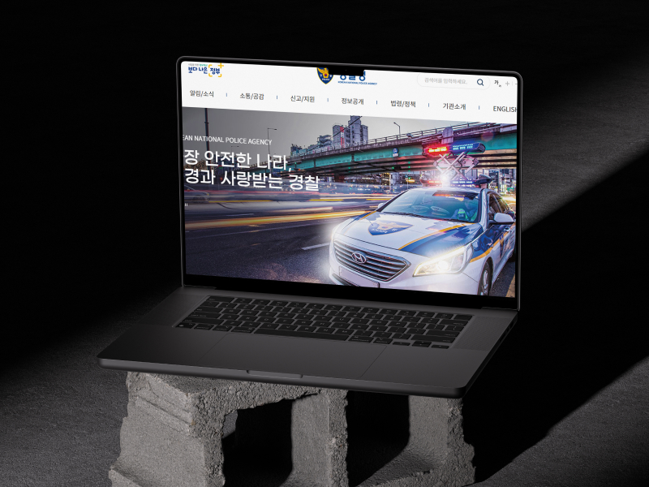
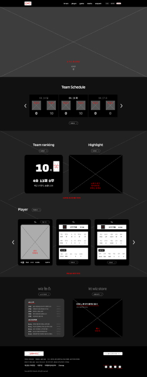
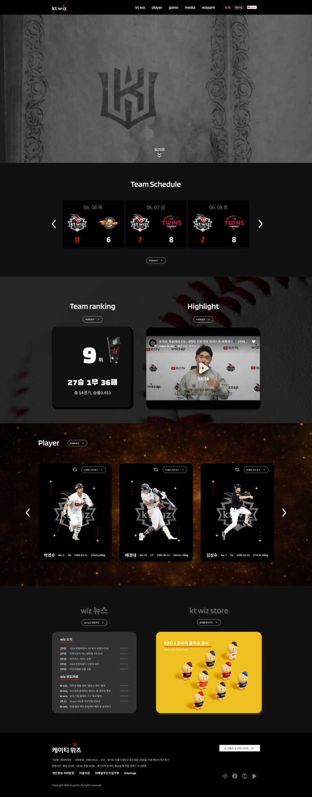
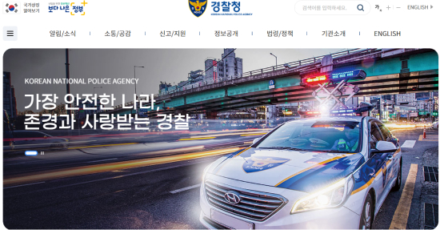

Web design
& App & Animation
PUBLIC OFFICE
- 작업기한 : 2024. 04. - 2024. 07.
- 사용툴 : illustrator, photoshop, visual studio code
- 제작참여도 : 100%

Problem
수원 남부 경찰서의 사이트 리뉴얼 제작하였다.
기존 홈페이지에서 불편하다고 생각된 부분으로
복잡한 레이아웃으로 인해 편리성이 결여된 문제
에 대해 수정하여 UX설계를 기획, 진행하였다.

Solution
기존 사이트 메인 화면의 메뉴 중 이중적인 메뉴들을 간소화하여 정리하였다.
메인 페이지에 팬들이 빠르게 정보를 습득할 수 있도록 레이아웃을 구성하였다.
팬의 입장에서 선수정보를 포토카드로 활용하여 흥미와 재미를 제공하였다.
수정예정
Wireframe & Develop
- 



Layout
CheckPoint
팬의 입장에서 편리성을 생각하며 UI 설계를 진행하였다.
반드시 필요한 정보와 더불어 다양한 볼거리를 제공하였다.
kt wiz의 기존 팬 뿐만 아니라, 타 팀 팬의 유입을 고려하여
kt wiz만의 특별함을 보여주고자 하였다.

PUBLIC OFFICE
- 작업기한 : 2024. 04. - 2024. 07.
- 사용툴 : illustrator, photoshop, visual studio code
- 제작참여도 : 100%
- GO TO SITE